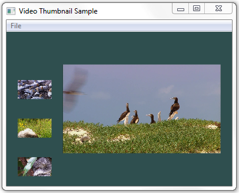

description: Shows how to use Microsoft Media Foundation to extract thumbnail images from a video file. The following image shows an example of these thumbnail images.
ms.assetid: 2c941f57-cd22-4462-bc47-347c383705fd
title: VideoThumbnail Sample
ms.topic: article
ms.date: 05/31/2018
VideoThumbnail Sample
Shows how to use Microsoft Media Foundation to extract thumbnail images from a video file. The following image shows an example of these thumbnail images.

APIs Demonstrated
This sample demonstrates the following Media Foundation interfaces:
Requirements
Â
Downloading the Sample
This sample is available in the Windows classic samples github repository.
Related topics
Media Foundation SDK Samples
Source Reader
Â
Â